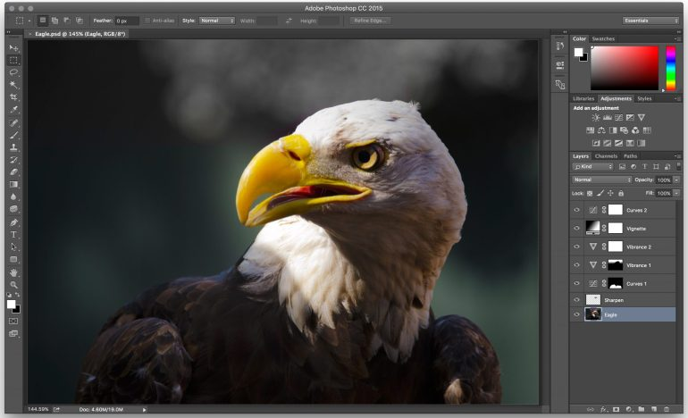

Photoshop
es un editor de fotografías desarrollado por Adobe Systems Incorporated. Usado principalmente para el retoque de fotografías y gráficos, su nombre en español significa "taller de fotos". Es conocido mundialmente. Fue creado en 1986 por los hermanos Thomas Knoll y John Knoll, desde entonces se ha convertido en una marca de uso común, lo que lleva a su uso como un verbo, aunque Adobe desaconseja su uso

Photoshop puede editar y componer imágenes rasterizadas y soporta varios modelos de colores: RGB, CMYK, CIELAB, colores sólidos y semitonos. Photoshop usa sus propios formatos de archivo PSD y PSB para soportar estas características. Desde junio de 2013, con la presentación de Creative Cloud, el esquema de licencia de Photoshop se cambió al modelo de software como servicio. Adobe planea incorporar más características a Photoshop para iPad
Historia
En 1987, Thomas Knoll, un estudiante de la Universidad de Míchigan escribió un programa en Macintosh Plus para mostrar imágenes a escala de grises en pantallas monocromáticas. Este programa, llamado Display, llamó la atención de su hermano, John Knoll, un trabajador de Industrial Light & Magic, que recomendó a Thomas convertir su programa en un editor de imágenes completo. En 1988, se reescribió el código Display para que funcionara en monitores a colores y juntos los hermanos expandieron la capacidad del programa, Thomas por un lado mejorando la habilidad para leer escribir en múltiples formatos y John desarrollando rutinas de procesamiento de imágenes que más tarde se llamaron filtros.
| version | plataforma | nombre del codigo |
|---|---|---|
| CS4 (11.0) | Mac OS, Windows | Stonehenge |
| CS5 (12.0) | Mac OS, Windows | White Rabbit |
| CS6 (13.0) | Mac OS, Windows | Superstition |
Caracteristica
Adobe Photoshop en sus versiones iniciales trabajaba en un espacio formado por una sola capa, donde se podían aplicar toda una serie de efectos, textos, marcas y tratamientos. En cierto modo tenía mucho parecido con las tradicionales ampliadoras. En la actualidad lo hace con múltiples capas. Photoshop de hecho se ha convertido, casi desde sus comienzos, en el estándar para el retoque fotográfico, pero también se usa extensivamente en multitud de disciplinas del campo del diseño y fotografía, como diseño web, composición de imágenes en mapa de bits, estilismo digital, fotocomposición, edición y grafismos de vídeo y básicamente en cualquier actividad que requiera el tratamiento de imágenes digitales.
